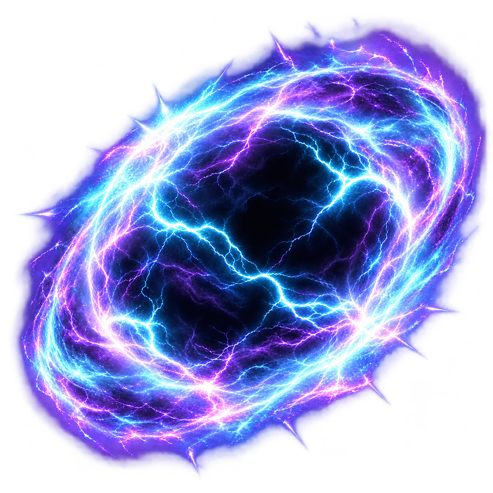
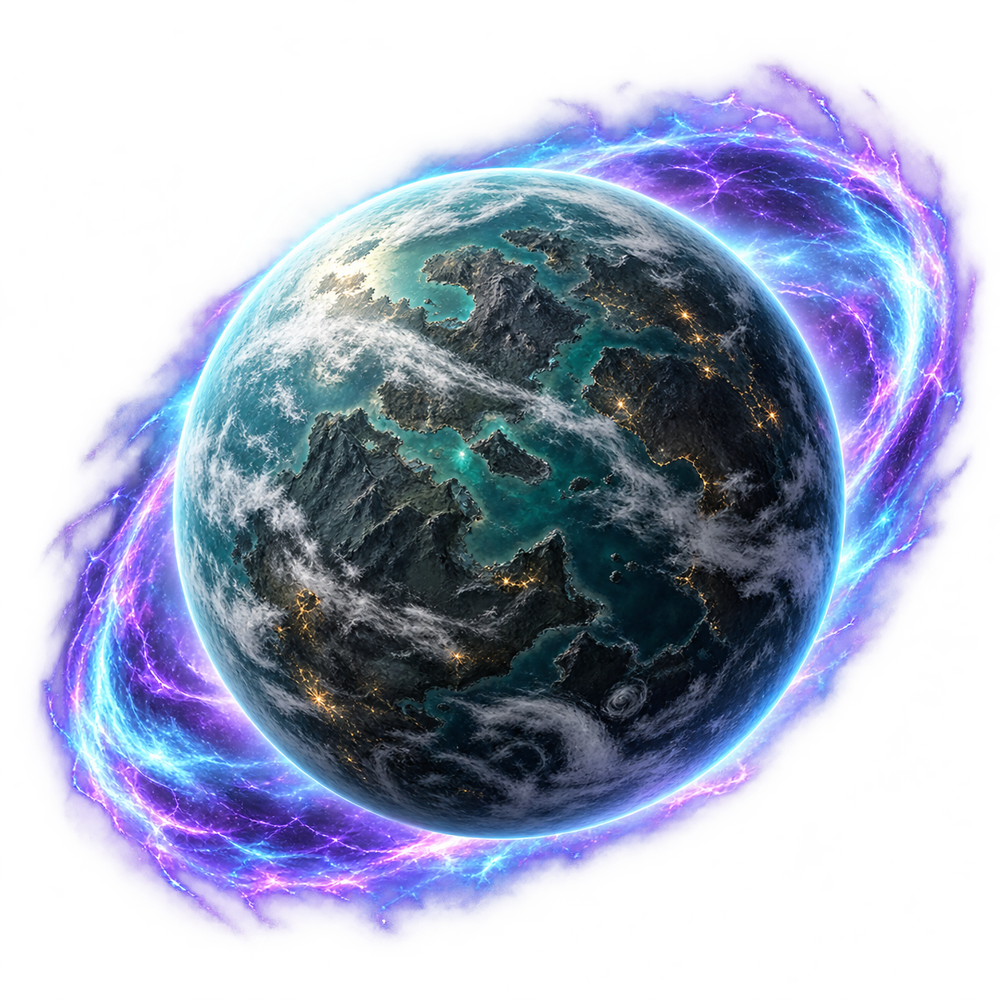
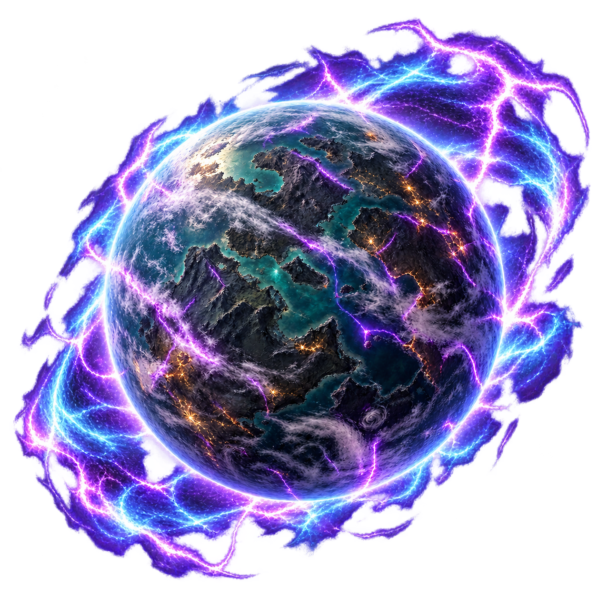
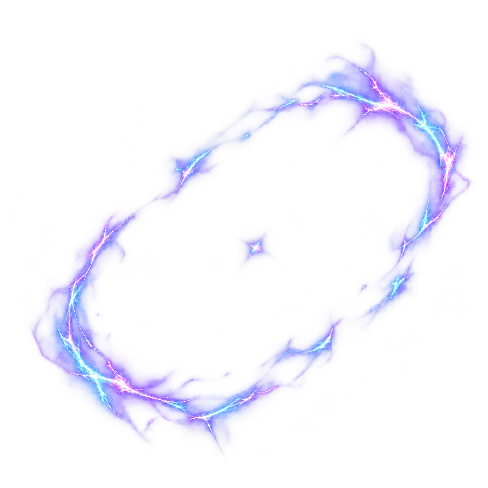

<!doctype html>
<html lang="ru">
<meta charset="utf-8">
<meta name="viewport" content="width=device-width, initial-scale=1">
<title>Нулевая галактика — фазы разлома</title>
<style>
  * { box-sizing: border-box; }
  body { margin: 0; padding: 32px; background: #0c1020; color: #e7e8f4; font: 16px/1.5 system-ui, sans-serif; }
  main { max-width: 1120px; margin: auto; }
  h1 { margin: 0 0 24px; font-size: 24px; }
  .phases { display: grid; grid-template-columns: repeat(4, minmax(0, 1fr)); gap: 16px; }
  figure { margin: 0; padding: 16px; background: #151b2e; border: 1px solid #353458; border-radius: 12px; }
  .art { display: block; width: 100%; aspect-ratio: 1; object-fit: contain; }
  figcaption { min-height: 3em; margin-top: 16px; font-weight: 600; }
  .thumb { display: block; width: 48px; height: 48px; margin: 12px 0 0; }
  a { color: inherit; }
  @media (max-width: 850px) { .phases { grid-template-columns: repeat(2, minmax(0, 1fr)); } }
  @media (max-width: 440px) { body { padding: 16px; } .phases { grid-template-columns: 1fr; } }
</style>
<main>
  <h1>Нулевая галактика — фазы разлома</h1>
  <div class="phases">
    <figure>
      <a href="energy.png"></a>
      <figcaption>Всплески энергии</figcaption>
      
    </figure>
    <figure>
      <a href="active.png"></a>
      <figcaption>Планета разлома</figcaption>
      
    </figure>
    <figure>
      <a href="unstable.png"></a>
      <figcaption>Нестабильная планета разлома</figcaption>
      
    </figure>
    <figure>
      <a href="closed.png"></a>
      <figcaption>Закрытый разлом</figcaption>
      
    </figure>
  </div>
</main>
</html>
